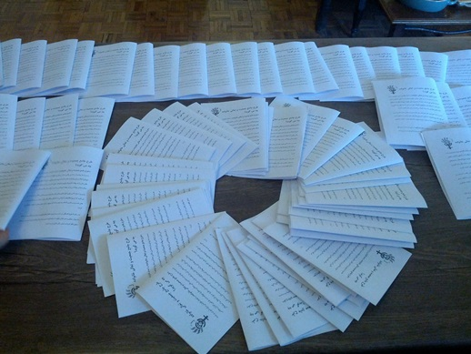
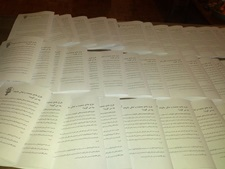
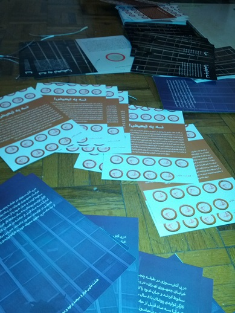

|
|

پخش کارت پستال و بروشور در روز جهانی زن در تهران
چهار شنبه21 اسفند 1392
تغییر برای برابری: روز جهانی هشت مارس در تهران در حالی گذشت که علیرغم برنامههای اجرا شده، یکی از برنامههای عمومی لغو مجوز شد و رسانههای دولتی و رسمی دربارهی این روز سکوت کردند. جمعی از فعالان حقوق زن، اما همچون سالهای گذشته تلاش کردند تا این سکوت رسمی را شکسته و این روز را با دادن بروشور و کارتپستال به زنان تبریک بگویند. آرزوی روزی که مجوز دور هم جمع شدن و راه رفتن در خیابان و حرف زدن از خواسته در دست دولتها نباشد، آرزویی است که بسیاری برای آن مبارزه کردهاند و آرزویی است که مبارزه برای رسیدن به آن همچنان ادامه دارد.


